12 critérios de aceite, <b>todos os 12 evidenciados no navegador</b>. Nenhum critério reprovado e nenhum defeito encontrado. A suíte fecha <b>117 testes / 419 asserções</b>. Esta é a história de maior risco de privacidade do épico — a busca por CPF que atravessa a fronteira entre municípios — e por isso a verificação foi feita no <b>corpo bruto das respostas da API</b>, não apenas no que a tela desenha: para um CPF de fora, a resposta carrega apenas existência e um token criptografado, sem nome, nascimento, família ou município. A única exceção autorizada pela spec (o alerta de duplicidade sem CPF) foi verificada como confinada: não alcança a auditoria e só considera candidatas sem CPF. Detalhes em “Observações e ressalvas”.
| CA | Critério | Status |
|---|---|---|
| CA01 | Pessoa já no município (comportamento atual preservado) | ATENDIDO · navegador |
| CA02 | CPF existe no repositório, fora do município | ATENDIDO · navegador |
| CA03 | Vinculação exige confirmar a identidade | ATENDIDO · navegador |
| CA04 | Confirmação de identidade que não coincide | ATENDIDO · navegador |
| CA05 | Cadastrar pessoa nova | ATENDIDO · navegador |
| CA06 | Nome da mãe é exigido no cadastro pelo município | ATENDIDO · navegador |
| CA07 | CPF já existente não cria segunda pessoa | ATENDIDO · navegador |
| CA08 | Pessoa sem CPF, com alerta de duplicidade | ATENDIDO · navegador |
| CA09 | Completar campo vazio de pessoa existente | ATENDIDO · navegador |
| CA10 | Campo preenchido não é alterado pelo município | ATENDIDO · navegador |
| CA11 | Exclusão não é oferecida | ATENDIDO · navegador |
| CA12 | Busca por nome não atravessa municípios | ATENDIDO · navegador |
Critério (Gherkin): Dado que sou Operacional do Tenant e a pessoa buscada já integra uma família do meu município Quando eu pesquisar pelo CPF dela Então ela aparece no resultado com os dados que a pesquisa já apresenta hoje E o comportamento atual da tela não muda
Como foi testado: Tela Pesquisa de Pessoas → busca pelo CPF de integrante ativo de família do município.
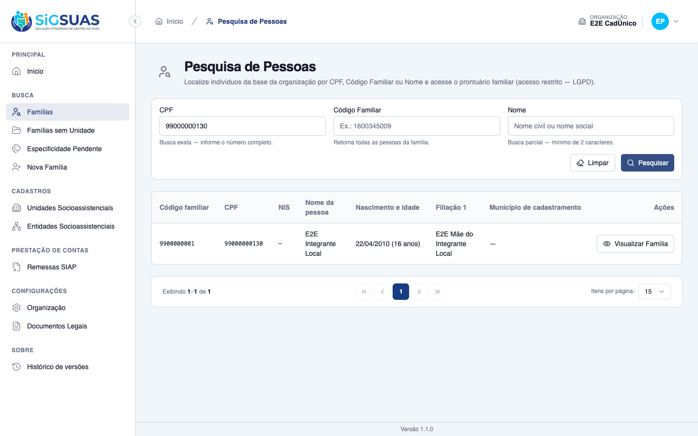
Critério (Gherkin): Dado que o CPF pesquisado pertence a uma pessoa cadastrada, que não integra nenhuma família do meu município Quando eu pesquisar por esse CPF Então o sistema informa que a pessoa já está cadastrada na plataforma E não apresenta nome, endereço, família nem município de origem E oferece a ação de vincular
Como foi testado: Busca pelo CPF de pessoa que existe na plataforma mas não integra família deste município, com inspeção da resposta crua da API além da tela.
Critério (Gherkin): Dado que o sistema informou que o CPF já está cadastrado Quando eu acionar a vinculação Então o sistema pede a data de nascimento ou o nome da mãe E só conclui a vinculação se o dado informado coincidir com o registro existente E, ao concluir, os dados da pessoa passam a ser visíveis no prontuário da minha família
Como foi testado: Vincular a família → informar o código familiar da família receptora → escolher o segundo dado de confirmação → confirmar com o valor correto.
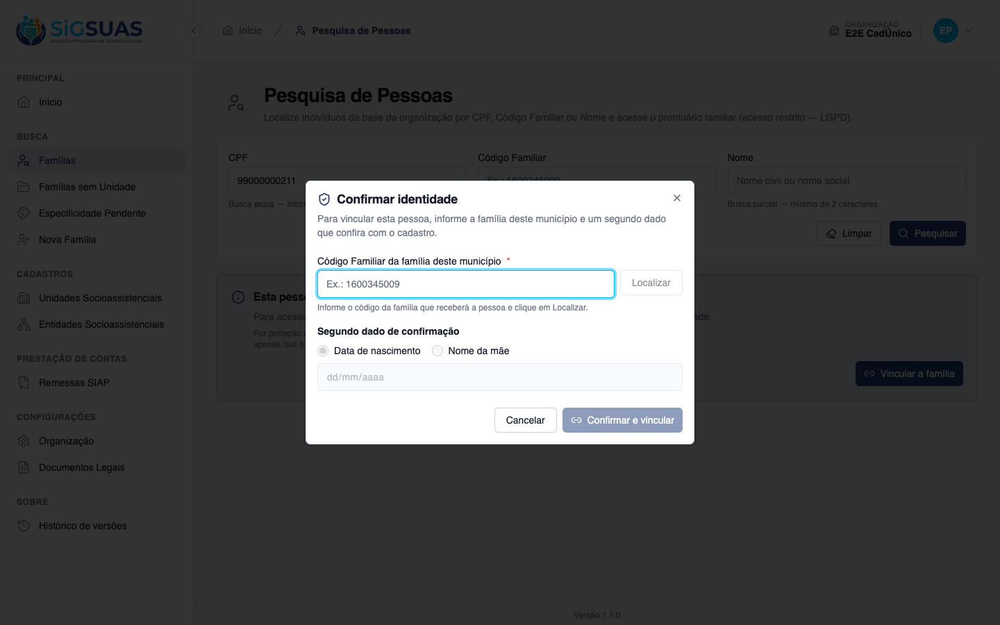
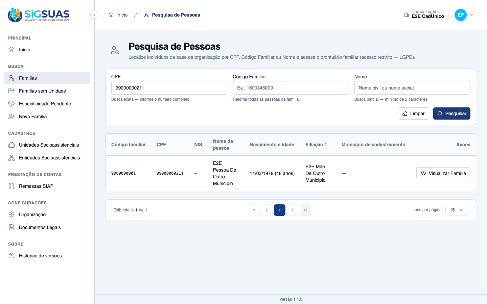
Critério (Gherkin): Dado que o sistema informou que o CPF já está cadastrado Quando eu informar uma data de nascimento que não coincide Então a vinculação não é concluída E o sistema não revela qual é a data correta E a tentativa é registrada na trilha de auditoria
Como foi testado: Mesmo fluxo do CA03, informando uma data de nascimento propositalmente errada, com inspeção do corpo da resposta e da trilha.
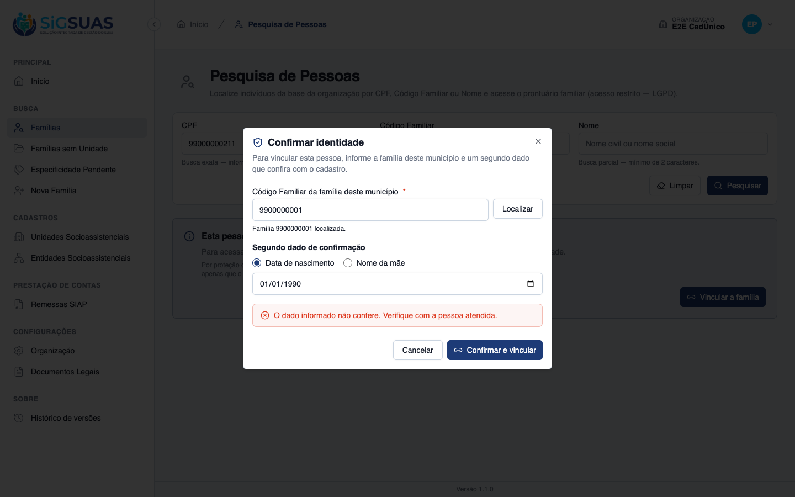
Critério (Gherkin): Dado que o CPF pesquisado não existe no repositório Quando eu cadastrar a pessoa informando CPF, nome completo, data de nascimento, nome da mãe e sexo Então a pessoa é criada E fica disponível para ser vinculada a uma família do meu município E a criação consta da trilha de auditoria, identificando o município e o usuário
Como foi testado: Busca por CPF inexistente → Cadastrar nova pessoa → preenchimento dos cinco campos → Cadastrar.
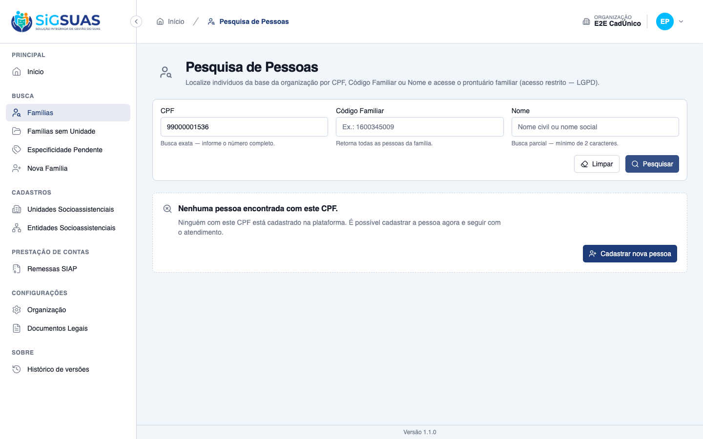
Critério (Gherkin): Dado que estou cadastrando uma pessoa nova Quando eu tentar salvar sem informar o nome da mãe Então o cadastro não é salvo E o sistema indica que o nome da mãe é necessário para a prestação de contas ao TCE-AL
Como foi testado: Preenchimento de todos os campos exceto o nome da mãe → Cadastrar.
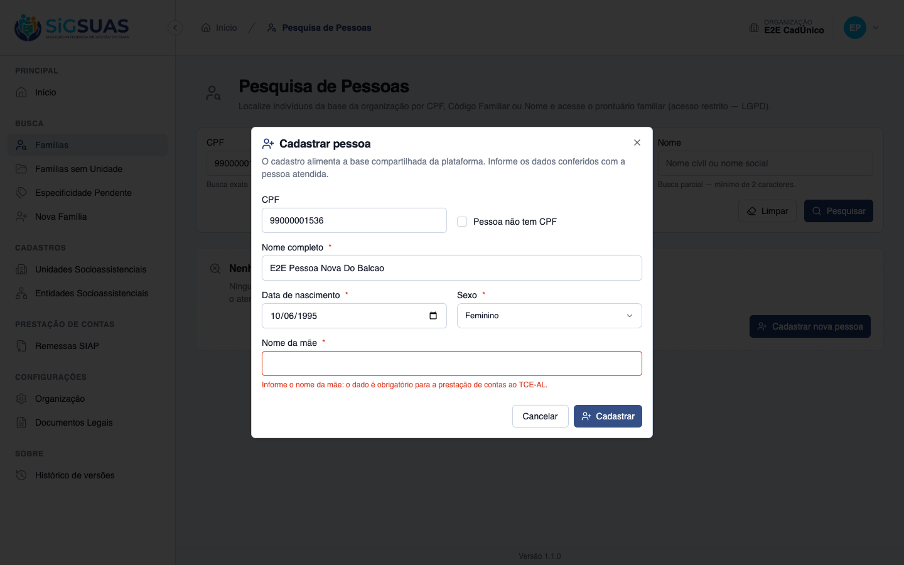
Critério (Gherkin): Dado que estou cadastrando uma pessoa e informo um CPF já cadastrado Quando eu tentar salvar Então nenhuma pessoa nova é criada E o sistema oferece o caminho de vinculação da pessoa existente, com a confirmação de identidade
Como foi testado: No formulário de cadastro, informar um CPF que já existe na base, com nome e demais dados diferentes, e tentar salvar.
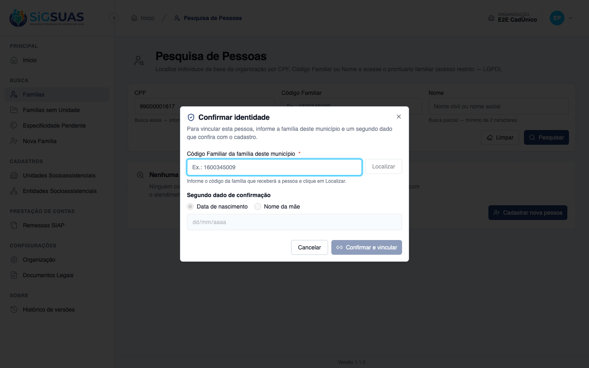
Critério (Gherkin): Dado que estou cadastrando uma criança que ainda não tem CPF Quando eu informar nome, data de nascimento e nome da mãe, deixando o CPF vazio Então o sistema apresenta as pessoas já cadastradas com nome e data de nascimento semelhantes E exige que eu confirme que não se trata de duplicidade E, ao confirmar, a pessoa é criada marcada como sem CPF
Como foi testado: Marcar Pessoa não tem CPF, informar nome e nascimento coincidentes com pessoa já cadastrada sem CPF, e tentar salvar; depois confirmar a não-duplicidade.
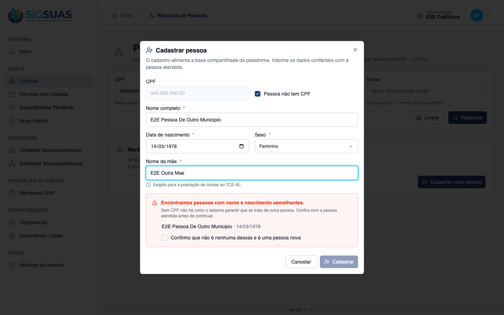
Critério (Gherkin): Dado que vinculei uma pessoa cujo nome da mãe está em branco Quando eu informar o nome da mãe Então o dado é gravado E a alteração consta da auditoria, identificando o município de origem da informação
Como foi testado: Campo do nome da mãe, no detalhe do integrante dentro da composição familiar (mesmo controle evidenciado na #10620/CA06).
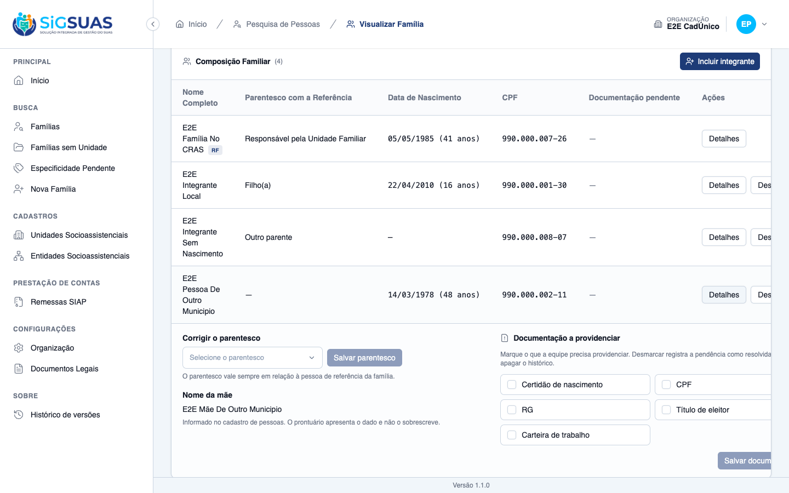
Critério (Gherkin): Dado que vinculei uma pessoa cujo nome da mãe já está preenchido Quando eu abrir os dados dela Então o nome da mãe é apresentado E não é oferecido para edição — a correção continua sendo ação do Painel de Administração Global
Como foi testado: Detalhe da pessoa vinculada cujo cadastro já possui o nome da mãe.
Critério (Gherkin): Dado que cadastrei uma pessoa por engano Quando eu abrir os dados dela Então não existe ação de excluir E a correção se faz por edição dos dados
Como foi testado: Varredura das ações disponíveis na tela onde os dados da pessoa são abertos.
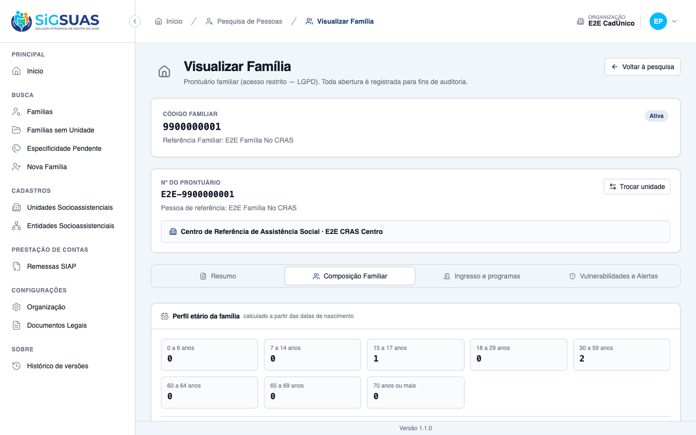
Critério (Gherkin): Dado que existe pessoa cadastrada em outro município com nome semelhante ao que pesquiso Quando eu pesquisar por nome parcial no Painel do Tenant Então ela não aparece no resultado E somente a busca por CPF exato informa a existência fora do município
Como foi testado: Busca por nome parcial que corresponde tanto a pessoa do município quanto a pessoa fora dele, com inspeção da resposta da API.
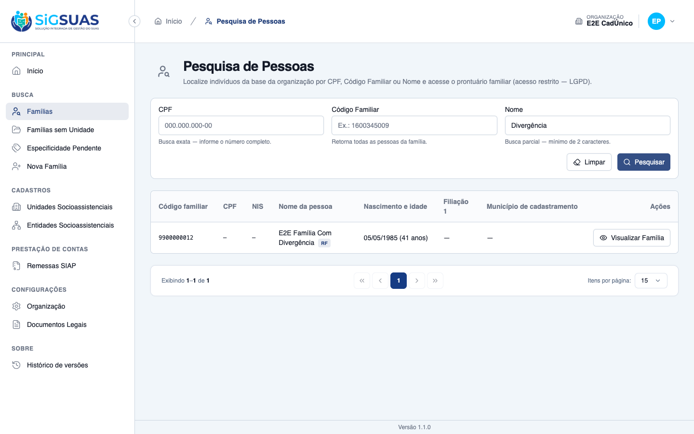
Este é o ponto de maior risco do épico: uma busca por CPF que atravessa a fronteira entre municípios. Filtrar o dado na interface não bastaria — bastaria abrir o inspetor do navegador para vê-lo. Por isso a verificação foi feita no corpo bruto da resposta.
O que a API devolve para um CPF de fora é apenas:
"data": [],
"global": { "exists": true, "can_link": true,
"person_ref": "<token criptografado>",
"message": "Esta pessoa já está cadastrada na plataforma." }Nenhum nome, nascimento, nome da mãe, endereço, família, município de origem ou id. O person_ref é cifrado (formato iv/value/mac), então nem serve como identificador estável para correlacionar pessoas entre buscas. É ele que carrega a referência até a vinculação sem transportar identidade.
A spec (§7.4) autoriza uma única exceção à regra de não revelar dados de pessoa de outro município: o alerta de duplicidade para cadastro sem CPF, que precisa exibir nome e data de nascimento — sem eles, o profissional não tem como decidir se é a mesma pessoa.
Verificamos que a exceção não escapa desse caminho:
person.duplicate_check_performed com apenas results_count. O nome exibido na tela tem zero ocorrências em todo o activity_log.Nota metodológica: a primeira tentativa de provocar o alerta usou uma pessoa com CPF e não disparou nada. O comportamento estava correto — era o teste que estava errado.
Uma confirmação de identidade malsucedida é um caminho clássico de vazamento: a mensagem de erro pode revelar o valor correto, ou a auditoria pode gravar o valor tentado, que é dado pessoal digitado por um terceiro.
Nenhum dos dois acontece. O corpo do 422 traz somente message genérica e error_code: identity_not_confirmed — um código estável, adequado para o front detectar o caso sem depender do texto. E a trilha grava attempted_field: "birth_date": registra qual campo foi tentado, nunca o valor tentado.
Some-se a isso que os CPFs aparecem mascarados na trilha (***.444.777-**) e que a própria consulta de existência é auditada (person.global_existence_checked, com searched_cpf igualmente mascarado). A auditoria de consulta exigida para esta história está presente.
Ao cadastrar uma pessoa nova pelo balcão, ela é criada — mas, como ainda não integra família alguma, volta a cair sob a fronteira de privacidade. O profissional que acabou de digitar nome e data de nascimento não os vê mais na busca seguinte: recebe apenas “Esta pessoa já está cadastrada na plataforma”.
É consequência direta e correta da RN12 — pertencer ao município é ter vínculo, não ter sido cadastrado por ele. E o caminho de saída está oferecido na mesma tela (“Vincular a família”), o que satisfaz o critério. Registra-se aqui porque é o tipo de comportamento que gera dúvida no primeiro atendimento, e vale estar previsto no treinamento da equipe.
Os critérios exigiram vincular uma pessoa de fora a uma família do município (CA03) e criar três pessoas pelo balcão (CA05 e CA08). Todas as alterações foram revertidas ao final: o vínculo foi removido e as três pessoas criadas foram excluídas em definitivo.
Estado confirmado: a pessoa de fora existe e voltou a ter zero vínculos, e a família de evidência tem novamente 3 integrantes ativos.
PASS Tests\Unit\Family\FamilyIntakeActionsTest ✓ it deduplicates a repeated (program, member) pair in the payload 0.40s PASS Tests\Unit\Http\Resources\PersonSearchResultResourceTest ✓ it computes the age from birth_date without persisting it 0.01s ✓ it prefers the social name over the civil name (RN03) 0.01s ✓ it falls back to the civil name when social name is empty or null (… 0.01s ✓ it uses the member NIS when present (RN03) 0.01s ✓ it falls back to the responsible NIS only for the RF (RN03) 0.01s ✓ it exposes null filiation and city when absent (premissa 5 — UI exi… 0.01s ✓ it defaults can_view_details to false without an authenticated user… 0.01s PASS Tests\Unit\Person\ConfirmPersonIdentityActionTest ✓ it confirms by birth date in STRICT ISO — ambiguity is refusal with… 0.01s ✓ it confirms by birth date in STRICT ISO — ambiguity is refusal with… 0.01s ✓ it confirms by birth date in STRICT ISO — ambiguity is refusal with… 0.01s ✓ it confirms by birth date in STRICT ISO — ambiguity is refusal with… 0.01s ✓ it confirms by birth date in STRICT ISO — ambiguity is refusal with… 0.01s ✓ it confirms by mother name ignoring case, accents and extra spaces… 0.02s ✓ it confirms by mother name ignoring case, accents and extra spaces… 0.01s ✓ it confirms by mother name ignoring case, accents and extra spaces… 0.01s ✓ it confirms by mother name ignoring case, accents and extra spaces… 0.02s ✓ it confirms by mother name ignoring case, accents and extra spaces… 0.01s ✓ it never confirms against an empty field — blank is not a master ke… 0.01s ✓ it refuses a field outside the two allowed by RN03 0.01s PASS Tests\Unit\Services\Geo\GeoLayerSyncServiceTest ✓ it deduplicates repeated ibge codes within the same load keeping th… 0.02s PASS Tests\Unit\Services\TenantPermissionResolverTest ✓ it unions permissions of stacked roles in the same tenant without d… 0.03s ✓ it groups bindings by tenant with roles and deduplicated permission… 0.02s PASS Tests\Feature\Api\CboControllerTest ✓ it returns 422 on duplicate code 0.03s ✓ it rejects updating a cbo to a duplicate code 0.01s PASS Tests\Feature\Api\CityControllerTest ✓ it rejects duplicate ibge_code with 422 0.01s PASS Tests\Feature\Api\CivilDocumentTypeControllerTest ✓ it rejects a duplicate code 0.01s WARN Tests\Feature\Api\Client\PersonSearchTest ✓ it returns an empty collection when no criteria is given (CA01/RN01… 0.03s ✓ it denies access without the person-search.index permission 0.03s ✓ it finds a person by exact CPF, sanitizing the mask (CA02/RN02/RN08… 0.03s ✓ it rejects a partial CPF (RN02 requires the full document) 0.01s ✓ it lists every active member of the family block by family code (CA… 0.03s ✓ it finds people by partial name on full_name OR social_name (CA04/R… 0.02s - it matches a partial name case-insensitively (RN02 ILIKE) → ILIKE c… 0.02s ✓ it rejects a name shorter than 2 characters 0.01s ✓ it combines criteria with AND (RN02) 0.02s ✓ it returns the RN03 triage columns with computed age and NIS fallba… 0.02s ✓ it never returns people from another tenant (CA10/RN07) 0.03s ✓ it exposes can_view_details=false for the base operator and true wh… 0.03s ✓ it keeps families.view-details out of every role on automatic assig… 0.60s ✓ it memoizes the Master bypass check: 1 query for N rows, not N (reg… 0.03s PASS Tests\Feature\Api\Client\ProfessionalControllerTest ✓ it blocks duplicate professional in the same tenant (E4) 0.03s ✓ it blocks duplicate registration number in the same tenant 0.02s PASS Tests\Feature\Api\ContractModalityControllerTest ✓ it returns 422 on duplicate code_tceal 0.01s PASS Tests\Feature\Api\CountryControllerTest ✓ it rejects duplicate iso_code with 422 0.01s PASS Tests\Feature\Api\DneImportControllerTest ✓ it logs a single force_destroyed activity without a duplicate delet… 0.03s PASS Tests\Feature\Api\FamilyIntakeFormControllerTest ✓ it rejects a duplicate code 0.01s PASS Tests\Feature\Api\GeoLayerImportControllerTest ✓ it logs a single force_destroyed activity without a duplicate delet… 0.01s PASS Tests\Feature\Api\Manager\GeoLayerControllerTest ✓ it blocks a duplicated name case-insensitively, but frees it after… 0.02s PASS Tests\Feature\Api\Manager\UserPermissionsTest ✓ it returns tenant_permissions grouped by tenant with deduplicated r… 0.03s PASS Tests\Feature\Api\MemberUnlinkReasonControllerTest ✓ it rejects a duplicate code 0.01s PASS Tests\Feature\Api\MinimumWageControllerTest ✓ it returns 422 on duplicate year 0.02s PASS Tests\Feature\Api\PersonControllerTest ✓ it blocks a duplicate cpf on create (CA01/#9594) 0.01s ✓ it flags a duplicate cpf (RN07/#9594) 0.01s ✓ it blocks a duplicate cnpj on create (CA03) 0.02s ✓ it validates and detects a duplicate alphanumeric cnpj on check-cnp… 0.01s PASS Tests\Feature\Api\PlatformVersionControllerTest ✓ it rejects a duplicated version_number on store 0.01s PASS Tests\Feature\Api\PostalCodeControllerTest ✓ it returns 422 on duplicate cep 0.02s PASS Tests\Feature\Api\RaceColorControllerTest ✓ it rejects a duplicate code 0.01s PASS Tests\Feature\Api\RoleControllerTest ✓ it rejects duplicate role name within same guard on store 0.02s ✓ it rejects clone with duplicate name in same guard 0.03s PASS Tests\Feature\Api\SocialEntityControllerTest ✓ it CA06: store with duplicate active CNPJ returns 422 and existing_… 0.02s ✓ it RN06: store with duplicate active CNEAS returns 422 0.02s ✓ it RN06: rejected store (duplicate CNEAS) leaves no orphan address 0.02s PASS Tests\Feature\Api\SocialProfessionalControllerTest ✓ it rejects duplicate cpf in same tenant 0.02s ✓ it rejects duplicate mds_number in same tenant 0.02s ✓ it still rejects duplicate CPF when both rows are alive 0.01s PASS Tests\Feature\Api\SocialProgramControllerTest ✓ it rejects a duplicate code 0.01s PASS Tests\Feature\Api\SocialUnitControllerTest ✓ it rejects duplicated social_unit_equipment_id in equipments payloa… 0.02s PASS Tests\Feature\Api\SocialUnitEquipmentAssignmentControllerTest ✓ it store rejects duplicate process_number for the same unit and equ… 0.02s PASS Tests\Feature\Api\StateControllerTest ✓ it rejects duplicate ibge_code within the same country with 422 0.02s ✓ it rejects duplicate uf in the same country with 422 0.01s PASS Tests\Feature\Api\UserAttachTenantControllerTest ✓ it is idempotent — does not duplicate existing UTR 0.01s PASS Tests\Feature\Api\UserFromCpfControllerTest ✓ it rejects duplicated CPF (already exists in system) 0.02s PASS Tests\Feature\Api\UserTenantRoleControllerTest ✓ it rejects a duplicate (user, tenant, role) 0.01s PASS Tests\Feature\Console\BackfillTenantLegalDocumentsTest ✓ it is idempotent — re-running does not duplicate documents or versi… 0.02s PASS Tests\Feature\CopyGlobalLegalDocumentsToTenantTest ✓ it is idempotent — re-running does not duplicate documents or versi… 0.02s PASS Tests\Feature\Dashboard\RegistrationQualityTest ✓ it counts duplicate records by repeated NIS per record, not per gro… 0.04s ✓ it counts duplicate records by repeated CPF (same person in more th… 0.04s ✓ it does not treat empty CPF/NIS as duplicates (RN03.1) 0.03s ✓ it deduplicates a pending citizen linked to more than one family 0.03s PASS Tests\Feature\Migrations\MigrateSocialProfessionalAssignmentsToTenantTest ✓ it is idempotent — running twice does not duplicate 0.02s PASS Tests\Feature\Person\TenantPersonSecurityTest ✓ it rejects the raw id and the raw uuid in place of the person_ref (… 0.03s ✓ it rejects an expired person_ref (§10 — TTL curto) 0.04s ✓ it rejects a person_ref issued to another municipality (§10) 0.03s ✓ it does not leak the person identifiers inside the token (§10 — opa… 0.03s ✓ it throttles the search that reaches the global repository (§10) 0.04s ✓ it throttles the identity confirmation, the trial-and-error oracle… 0.03s ✓ it denies filling fields of a person NOT linked to the municipality… 0.03s ✓ it denies linking into a family of another organization (RN07) 0.03s ✓ it requires person-search.index to register a person 0.03s ✓ it keeps persons a global repository: no tenant scope, and authorsh… 0.03s ✓ it never accepts provenance or authorship from the payload (§10) 0.04s ✓ it never writes a plain CPF, a full name or a confirmation value to… 0.03s PASS Tests\Feature\Person\TenantPersonTest ✓ it keeps the current person search payload untouched for someone in… 0.04s ✓ it reports only the existence of a person from another municipality… 0.03s ✓ it offers the registration path when the CPF does not exist anywher… 0.03s ✓ it audits every query that reaches the global repository, with the… 0.03s ✓ it never reaches other municipalities on a partial name search (CA1… 0.03s ✓ it links a person from outside after confirming the identity (CA03) 0.03s ✓ it confirms the identity by the mother name, ignoring case and acce… 0.03s ✓ it never reveals the correct value when the confirmation fails, and… 0.03s ✓ it refuses the confirmation when the existing record has the field… 0.03s ✓ it registers a new person from the municipality, stamping the prove… 0.03s ✓ it requires the mother name when the municipality registers a perso… 0.03s ✓ it does not create a second person when the CPF already exists (CA0… 0.03s ✓ it does not create a person without CPF while there are similar one… 0.03s ✓ it audits the duplicate check by the COUNT, never by the names (CA0… 0.03s ✓ it creates a person without CPF with no fuss when there is nobody s… 0.03s ✓ it fills an empty field of a person linked to the municipality (CA0… 0.04s ✓ it refuses to overwrite a field that is already filled (CA10/RN08) 0.03s ✓ it has no delete route for a person (CA11/RN07) 0.03s PASS Tests\Feature\Seeders\CboAccessProfileSeederTest ✓ it is idempotent — re-running duplicates nothing 1.66s PASS Tests\Feature\Seeders\CompositionLookupSeedersTest ✓ it is idempotent — running both seeders twice does not duplicate 0.02s PASS Tests\Feature\Seeders\IntakeLookupSeedersTest ✓ it is idempotent — running both seeders twice does not duplicate 0.02s PASS Tests\Feature\Seeders\LocalDevSeederTest ✓ it is idempotent — a second run duplicates nothing and breaks no un… 1.10s PASS Tests\Feature\Services\Cadunico\CadunicoSyncAddressInconsistencyTest ✓ it does not duplicate the open row when the same family fails again… 0.04s PASS Tests\Feature\Services\SetTenantOfficialAddressActionTest ✓ it reuses the config created beforehand (does not duplicate tenant_… 0.01s Tests: 1 skipped, 117 passed (419 assertions) Duration: 6.66s